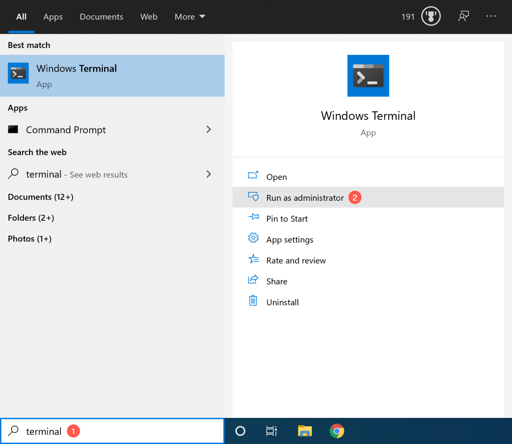

Installing Windows Subsystem for Linux
These instructions are for Windows 10 only!
Goal
Many biocomputing tools are only accessible and executed from a Unix-like Command Line Interface (CLI) that users typically access with an application called “Terminal”. Out-of-the-box, Windows 10 does not support Unix-like commands, but it is possible to add this functionality. In these instructions, you will:
- Install a “Terminal” application from the Microsoft Store.
- Install the “Windows Subsystem for Linux” (WSL).
This program allows you to run Linux within your Windows environment (when an operating system is run on top of another operating system, it is called a virtual machine). - Install the Linux distribution “Ubuntu 18.04 LTS” from the Microsoft Store.
- Start up “Ubuntu” and create a user account.
Updating Windows 10
To install WSL, you must first update to the latest version of Windows 10: version 20H2
(Major Windows versions indicate in which half of the year they were released, i.e. the latest version 20H2 in the second half—October—of 2020.)
Check your current Windows version
 : Select the Windows Start button > Settings > System > About > scroll to bottom of page
: Select the Windows Start button > Settings > System > About > scroll to bottom of page
If you do not have the latest version installed: Select the Windows Start button > Settings > Update & Security > Windows Update

If Windows Update does not offer the latest version, then manually update by going to Windows 10 Downloads and choosing the latest version.
Installing Ubuntu
You will have to restart your computer as part of the installation, so make sure to save any changes before you continue with the installation.
Go to Microsoft Store Terminal website > click the “Get” button to install it.
Select the Windows Start button > type
terminal > choose “Run as administrator” > choose “Yes” in the prompt that opens > enter your administrator password
In the Terminal app, enter the following commands to enable WSL
dism.exe /online /enable-feature /featurename:Microsoft-Windows-Subsystem-Linux /all /norestartand virtual machines on your system:
dism.exe /online /enable-feature /featurename:VirtualMachinePlatform /all /norestartRestart your computer.
After your restart, download the latest WSL kernel and install it by double-clicking on the file.
In the Terminal app, enter the following command to use the latest version of WSL:
wsl --set-default-version 2Go to Microsoft Store Ubuntu 18.04 LTS website > click “Get” button to install it
Time to start Ubuntu for the first time! Select the Windows Start button > type
Ubuntuand start it. In a new window, a prompt will ask you to create a username (use only lowercase letters and underscores, i.e._, instead of spaces) and a password. You will need this password whenever you install something on Ubuntu, so retain the information somewhere secure. This combination of username and password is specific to the Linux operating system and independent of your Windows username and password. You can exit Ubuntu by entering:exitBack in the Terminal, enter the following command to make Ubuntu your default for WSL:
wslconfig /setdefault Ubuntu-18.04Now you can start Ubuntu from the Terminal by entering:
wslAs a final step, we are going to update all installed programs. In Ubuntu, enter the following commands:
sudo apt update && sudo apt upgrade